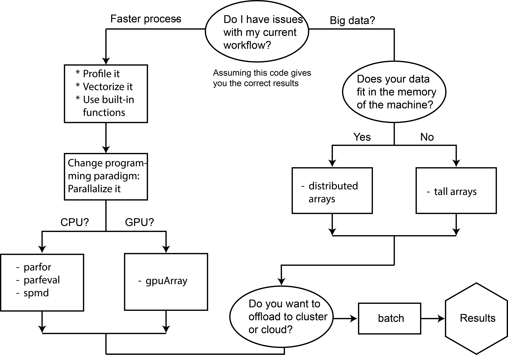

Application examples¶
Matlab¶
How to find Matlab¶
Matlab is available through the Menu bar if you are using ThinLinc client (recommended). Additionally, you can load a Matlab module on a Linux terminal on Kebnekaise. Details for these two options can be found here.
First time configuration¶
The first time you access Matlab on Kebnekaise, you need to configure it by following these guidelines Configuring Matlab
Tools for efficient simulations¶
Chart flow for a more efficient Matlab code using existing tools (adapted from1)

Exercise 1: Matlab serial job
The folder SERIAL contains a function funct.m which performs a FFT on a matrix. The execution time is obtained with tic/toc and written down in the output file called log.out. Run the function by using the MATLAB GUI with the help of the script submit.m.
As an alternative, you can submit the job via a batch script job.sh. Here, you will need to fix the Project_ID with the one provided for the present course and the Matlab version.
Exercise 2: Matlab parallel job
- PARFOR folder contains an example of a parallelized loop with the “parfor” directive. A pause() function is included in the loop to make it heavy. This function can be submitted to the queue by running the script submit.m in the MATLAB GUI. The number of workers can be set by replacing the string FIXME (in the “submit.m” file) with the number you desire.
Try different values for the number of workers from 1 to 28 and take a note of the simulation time output at the end of the simulation. Where does the code achieve its peak performance?
- SPMD folder presents an example of a parallelized code using SPMD paradigm. You can submit this job to the queue through the MATLAB GUI.
Exercise 2: Matlab GPU job
GPU folder contains a test case that computes a Mandelbrot set both on CPU mandelcpu.m and on GPU mandelgpu.m. You can submit the jobs through the MATLAB GUI using the submitcpu.m and submitgpu.m files.
The final output if everything ran well are two .png figures which display the timings for both architectures. Use the “eom” command on the terminal to visualize the images (eom out-X.png)
Keypoints
- The software on Kebnekaise is mostly accessed through the module system.